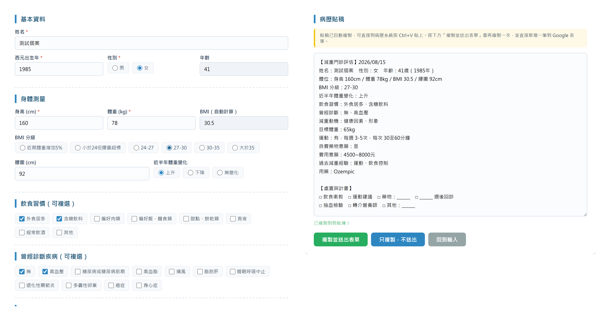
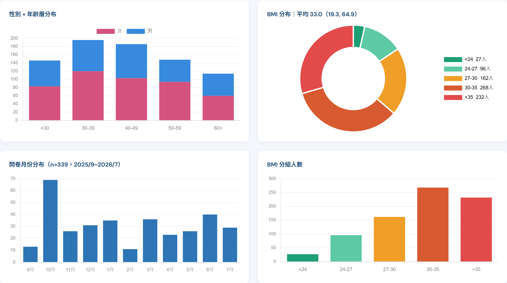
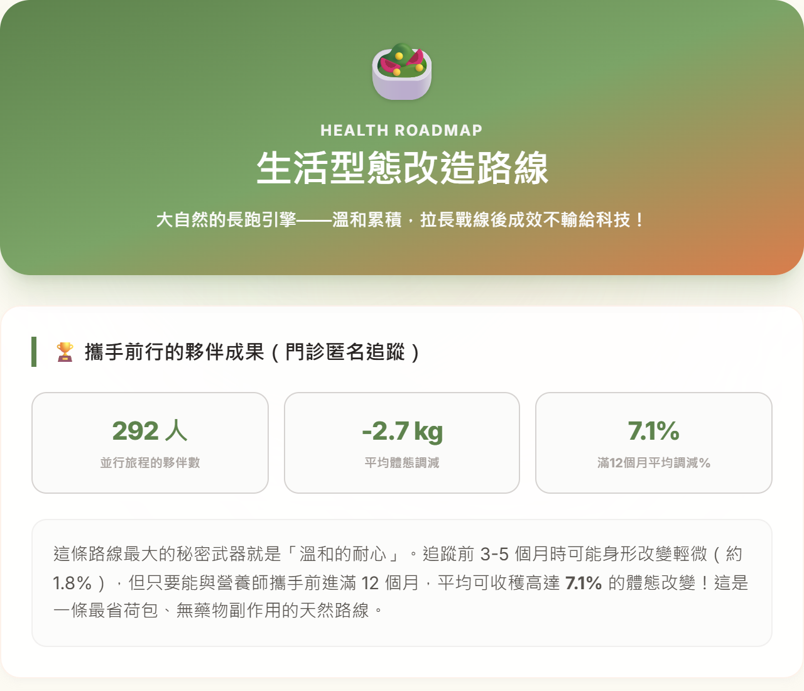
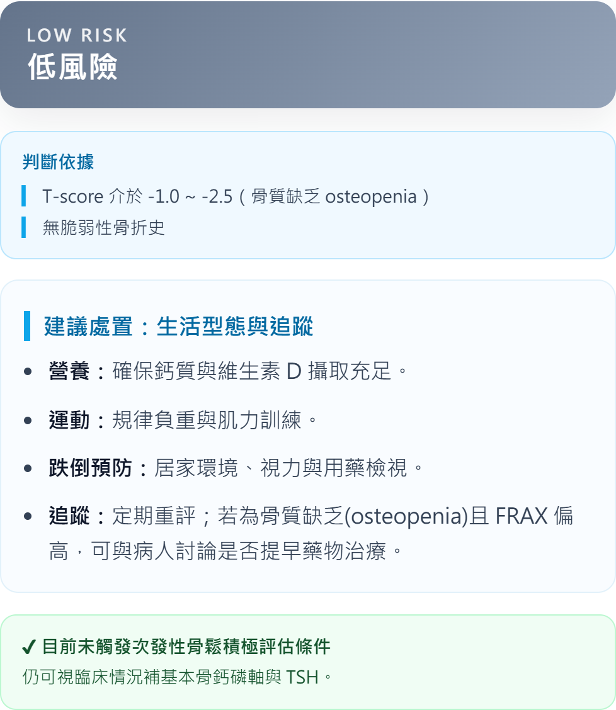

台灣肥胖醫學會 2026 南區學術研討會
人工智慧在
潘湘如 醫師高雄榮民總醫院 家庭醫學部
2026 年 9 月 20 日
前言
為什麼是現在？
肥胖照護負擔持續上升，與 AI 技術快速演進，在此刻交會。
減重的真正難題不是減下來
2 年內 >50% 復胖
5 年內 >80% 復胖
門診端的結構性限制
行政負擔重、衛教時間不足
專科照護可近性有限
資訊不正確、順從性不佳
復胖數據：Med Clin North Am. 2018 Jan;102(1):183–197.
前言
今日架構
Ⅰ 發展脈絡
過去與現在
11 分
›
Ⅱ 現況實務
臨床導入案例
17 分
›
›
每個板塊有各自的識別色，翻頁時可據此判斷進度。
Ⅰ
AI 於肥胖醫學應用的分析框架
以「診斷／管理／研究」三面向作為全場回顧的分類骨架
Ⅰ 發展脈絡
過去：AI 輔助診斷與風險分層（一）
2018–2022 奠基期
9,478名
3–6 歲學齡前兒童
中國北京、唐山GBM 梯度提升機建模
模型的價值不只在預測誰會胖，而在指出哪裡下手最有機會 。
Endocrine. 2022 Jun;77(1):63–72｜長條長度僅代表原研究的排序 1–5 ，
非重要度數值 （原文未提供效果量）。
Ⅰ 發展脈絡
過去：AI 輔助診斷與風險分層（二）
2018–2022 奠基期
中國上海多中心橫斷面研究（n = 2,945 ），以非監督式機器學習
依血糖、胰島素、尿酸、OGTT 等代謝指標分群
44% MHO
33% HMO-U
15% LMO
8% HMO-I
代謝健康 44%
帶代謝異常 56%
MHO 代謝健康型，共病較少
HMO-U 高尿酸型
LMO 低代謝型
HMO-I 合併 PCOS／糖尿病
同樣是肥胖，超過半數帶有代謝異常 ——BMI 相同，風險未必相同。
Front Endocrinol (Lausanne). 2021 Aug;12:63–72｜另一取徑：以深度學習（DNN）
從營養攝取預測多項代謝疾病——Int J Environ Res Public Health. 2021 May 24（韓國 KNHANES）
Ⅰ 發展脈絡
中期：穿戴裝置與數位行為介入（一）
2022–2024 驗證期
證據等級已由單一試驗，走向系統性回顧的再回顧 ——
身體活動 SMD 0.3–0.6、身體組成 SMD 0.7–2.0、體適能 SMD 0.3
行為改變幅度明確，換算成體重卻只有 1 公斤——
單靠監測不足以處理肥胖 ，必須與臨床介入結合。
Lancet Digit Health. 2022;4:e615–26；另見 Obesity Reviews. 2019;20:1485–1493。
Ⅰ 發展脈絡
中期：穿戴裝置與數位行為介入（二）
2022–2024 驗證期
450人
英國 4 家醫院
University of Warwick（2025/5）App 遠距諮詢 vs 傳統門診
COVID-19 成為大規模自然實驗 ：疫情迫使照護轉為遠距，
意外累積出遠距減重的成效證據Front Endocrinol. 2022 Mar;13／Obes Res Clin Pract. 2025 機器感知輔助減重 ：以自動辨識取代人工記錄食物、飲食行為與身體活動，
推估能量收支Public Health Nutr. 2021;24(8):1993–2020
面對面與線上不是取代關係 ——線上的價值在於問責感、個人化回饋，
以及避開團體活動的心理負擔。
Ⅰ 發展脈絡
政策與產業採用現況
2025 衛生福利政策白皮書
遠距醫療：偏鄉與醫療資源不足地區
輔具：提升自主生活與生活品質
健康資訊系統、AI 與大數據
智慧家庭、穿戴裝置、遠距監測系統
國際指引收錄現況
ADA 指引肥胖與體重管理章 AI 提及
0 次
2026 全套 20 章 machine learning
0 次
ADA 肥胖專屬指引 兩章 AI
0 次
數位化是政策方向，但 AI 至今未寫進任何一條肥胖治療建議條文 ——落差正是本場要談的空間。
ADA. Standards of Care in Diabetes—2026. Diabetes Care 2026;49(Suppl 1)（Section 8：DOI 10.2337/dc26-S008）；
The Obesity Association. Standards of Care in Overweight and Obesity（DOI 10.1136/bmjdrc-2025-005729、10.1136/bmjdrc-2026-006247）。
以 Europe PMC 全文檢索，檢索日 2026-08-15。
Ⅰ 發展脈絡
消費端平台的 AI 產品化（一）：Noom
技術路線：以心理行為驅動模型為核心
設計核心是認知行為理論 ，而非熱量計算本身
AI 用於個人化訊息推送與行為模式辨識，鎖定使用者的動機曲線
商業模式為訂閱制，強調教練＋演算法的混合介入
待補： Noom 公開發表的成效數據與其研究設計限制（多為自家發表／單臂設計，引用時需說明）。
Ⅰ 發展脈絡
消費端平台的 AI 產品化（二）：WeightWatchers
技術路線：臨床整合模型
WeightWatchers：臨床整合
納入處方藥物與醫療服務串接
朝「數位平台 ＋ 臨床路徑」整合
兩條路線的分歧，預告了後續 GLP-1 時代「藥物 ＋ 數位管理」的整合方向。
Ⅰ 發展脈絡
現在：GLP-1 藥物與 AI 結合的進展（一）
2025–2026 精準醫療期
TiP DecScore：用藥是否符合 AI 建議
重點不是「AI 讓藥更有效」，而是用 AI 挑對病人 ——把有限的藥物資源，配置到最可能受益的人身上。
引用限定條件已依 reference/citation-verification.md 查證回填：GRS 研究為 liraglutide（非 semaglutide）、
屬會議摘要；TiP DecScore 為次族群結果，非全體患者使用前後對比。
Ⅰ 發展脈絡
現在：GLP-1 藥物與 AI 結合的進展（二）
AI 參與度對藥物成效的影響
-22.89%
高參與度組（engaged）
-17.55%
低參與度組（non-engaged）
市場規模：US$38.5B 限定主要市場，非全球 （DelveInsight）
資料來源：JMIR 2026;e83718（AI 參與度數字）；DelveInsight（市場規模）。
原大綱中的「Semaglutide 7.8%→9.5%／Tirzepatide 11.2%→13.9%」已查證為誤植並刪除，請勿於講稿中使用。
Ⅰ 發展脈絡
新興方向：Agentic AI 在肥胖照護
從「回答問題」走向「主動執行照護任務」
MediKarma
「Diabetes & Obesity Jill」35%
HealthVerity eXOs
宣稱「零幻覺」廠商自評，非第三方驗證
WeGoTogether
成效 -20.4% ／-50.5% 24 個月僅存 325 人
引用這類成效數字務必看 n——WeGoTogether 的漂亮數字
來自 24 個月後仍留下的 325 人 ，典型的存活者偏誤。
引用已依 reference/citation-verification.md 篩選：原列之「streaMLine」查無此平台（疑似幻覺）已刪除。
WeGoTogether 數字真實，但簡報現場若被追問 n 數，需主動說明存活者偏誤。
Ⅰ 發展脈絡
支付端／雇主端開始以 AI 決定「誰該用藥、誰先用藥、誰需要更多人力介入」
價值主張從「提供療法」轉為「提高每一分投入的健康產出」
實證：AI 優化資源配置
52 名過重／肥胖者，4 週團體治療後隨機分派 12 週
對照組＝標準照護，介入組＝AI 最佳化分配
結果
兩組同樣達成 7% 體重減輕
但 AI 組只用了 1/3 的教練接觸量
Contemporary Clinical Trials. 2023;124:107029（Using artificial intelligence to optimize
delivery of weight loss treatment）——
對臨床端的意涵：AI 的價值不只在「效果更好」，更在用更少的人力達到同樣效果 ；
但相對地，處方與資源決策外部化的壓力也將浮現 。
Ⅰ 發展脈絡
小結：三個發展階段的共同軌跡
2018 – 2022
奠基期
證明「可預測 」
2022 – 2024
驗證期
證明「有效果 」
2025 – 2026
精準醫療期
證明「可決策 」
共同軌跡：從理論驗證，走向臨床可操作的工具 。
從文獻回顧，
前面談的是「別人做到哪裡」。
Ⅱ
現況實務：臨床工作導入案例
減重門診生態系為主線，其餘門診工具為輔線佐證方法論的可複製性
本節「AI」有兩層意義，先分清楚：①工具本身運用 AI 技術 （如 RAG 檢索）；
②工具由 AI agent 輔助開發完成 。評估表單屬於後者——它沒有用到 AI 技術，
但它是後續兩個 AI 案例的資料基礎建設。
主線 案例
01
減重評估表單
1 / 2
雙軌資料蒐集設計
病人自填 ＋ 醫師輸入，兩條路徑寫入同一份回覆試算表
病人端 ：初診前線上填寫 Google 表單；改為單一區段設計 ，
解決舊版問卷跳題造成資料斷裂的問題醫師端 ：看診時用「減重門診輸入工具」下拉選單快速輸入兩者資料寫入同一份回覆試算表 ，不必事後合併
定位說明：本工具為純表單＋樣板拼接，不含 AI 技術 ；
但由 AI agent 輔助開發、當天上線 。
主線 案例
01
減重評估表單
2 / 2
自動產生病歷貼稿，並驅動下游
一鍵「產生病歷文字」：把下拉選單資料組成可直接貼進病歷系統的結構化貼稿
樣板拼接，非 AI 生成
同時背景送出同一筆資料到 Google 表單——免去雙重輸入
結構化回覆，是後續 AI 管理系統與月度分析自動化共同的資料基礎建設

左：下拉選單輸入 右：一鍵產生的結構化貼稿。畫面為測試資料 ，非真實病人。
主線 案例
02
AI 管理系統
1 / 3
設計動機 ：門診衛教問題高度重複，但直接用一般對話式 AI，
回答容易與院內實際作法脫節
知識庫涵蓋兩類院內既有文件
衛教單張 ——門診原本就在發的素材，病人看得懂的語言治療指引 ——院內實際採用的處置準則
兩者都是既有文件 ，不需為了導入 AI 另外編寫內容——
這也是這套系統能快速上線的原因。
主線 案例
02
AI 管理系統
2 / 3
RAG 架構如何降低幻覺風險
拖曳滑桿，比較有無 RAG 的差異
無 RAG（一般對話式 AI）
憑訓練資料籠統作答
可能編造不存在的衛教資訊（幻覺）
無法引用院內實際數據
有 RAG（接院內資料庫）
先檢索院內資料庫再作答
回答附實際資料來源
敏感問題自動轉介真人
← 拖曳比較 →
主線 案例
02
AI 管理系統
3 / 3
完整流程與敏感問題轉介
AI 負責重複性衛教，臨床判斷不外包給模型
關鍵設計不是「AI 能回答多少」，而是明確劃出它不該回答的範圍 。
待補： 「敏感議題」的實際判定範圍（哪些主題會觸發轉介），以及應用場景的成效觀察。
若尚無量化數據，建議以質性描述呈現，不要硬湊百分比。
主線 案例
03
月度分析自動化
1 / 4
原始資料
Google Drive
›
›
›
雲端發布
GitHub Pages
全程每月自動執行一次 ，人工只需確認產出。
主線 案例
03
月度分析自動化
2 / 4
定期檢視成效
門診經營不再只靠年度回顧，而能逐月追蹤
新增個案特徵 ：每月新收案的組成變化藥物成效趨勢 ：分組追蹤各藥物的減重表現未回診率 ：採雙軌口徑 呈現，避免單一定義造成誤判

2026-07 月報實際畫面。數據已去識別化並聚合呈現 ，不含任何可識別個人的欄位。
主線 案例
03
月度分析自動化
3 / 4
雲端發布與時程佐證
全流程18 天 從動手到上線
自動發布至 GitHub Pages、OneDrive、Google Drive 三處
每月固定執行一次 ——關鍵不在單次產出，而在「不需要記得做」
自動化真正省下的不是分析時間，而是每個月重新啟動這件事的心力 。
主線 案例
03
月度分析自動化
4 / 4
衍生應用：「減重大冒險」路線推薦遊戲
從院內統計，長出病人衛教工具
玩家答完 7 關 後，依本院匿名統計 自動推薦五種減重路線
推薦數字每月隨月度分析同步更新 ——衛教素材不會過期
意義：同一份分析基礎建設，同時服務門診經營 與病人衛教

推薦結果頁。路線比較中 n<10 的組別已排除 ，避免小樣本百分比誤導。
輔線 案例
A
骨鬆風險評估
1 / 4
臨床痛點 ：骨折風險評估與用藥決策需反覆查表、對照指引決策邏輯明確但步驟繁瑣——正是適合工具化的類型
待補： 設計動機的具體場景描述（哪一類病人、原本花多少時間）。
輔線 案例
A
骨鬆風險評估
2 / 4
此設計呼應 Ⅲ 段核心主張：「資料不上傳」是比「去識別化」更上游的防線 。
輔線 案例
A
骨鬆風險評估
3 / 4
決策邏輯
風險分層依臨床指引 產生，規則外顯可查核
用藥建議跟著分層走，邏輯寫在 rules 檔而非程式碼裡 ——指引更新時只改規則
判定依據直接列在結果頁上，醫師與病人都看得到為什麼

示範個案：65 歲女性、T-score −2.3、無脆弱性骨折史。待補：所依循的指引名稱與版本年份
輔線 案例
A
骨鬆風險評估
4 / 4
臨床應用場景
已於 GitHub Pages 上線 ，純前端、不存資料
門診當場即可操作，不需登入、不需安裝
待補： 初步成效觀察（使用頻率／節省時間）。無量化數據則以質性描述呈現。
輔線 案例
B
肌少症篩檢
1 / 3
問題背景
SARC-F ＋ SARC-CalF 問卷式初篩
社區與門診都需要快速初篩 ，但紙本問卷計分與判讀耗時
篩檢的價值在量體 ——工具化才能把量做出來
輔線 案例
B
肌少症篩檢
2 / 3
判定邏輯與離線架構
PWA 離線架構
社區篩檢站現場常無穩定網路
離線可用是可行性前提 ，非加分項
輔線 案例
B
肌少症篩檢
3 / 3
衍生衛教工具：寓教於樂
「存肌力、享健康」——給做完篩檢的長輩與家人
篩檢工具的價值不在判定本身，而在判定之後病人知道要做什麼 。
與主線的「減重大冒險」同一個模式：臨床工具產出，直接長成衛教素材。
依 AWGS 2019 亞洲肌少症共識與高齡營養運動建議編寫｜CC BY-NC-ND 4.0｜
介面與程式由 AI agent 協助實作
同方法論延伸到其他門診
同一套「rules.json ＋ 決策引擎」，已複製到體重管理以外的場域
HP-clinic
幽門螺旋桿菌陽性處置決策工具
附病人衛教單張，公開 GitHub Pages
pneumonia-clinic
PPV23／PCV13／PCV20／PCV21 成人肺炎鏈球菌疫苗比較決策器
附 PPTX 與病人衛教單張
共同目標：減少重複問診與行政負擔，把醫師心力留給臨床判斷 。
Ⅱ 現況實務
工具導入時程量化佐證
從「動手」到「可用」的實測時間
13分鐘
肌少症篩檢工具
方法學限制（請務必於現場口頭說明）：
①以上為 commit 時間區間，非實際投入工時 ；
②第一個案例含學習期，時間不可與後續案例直接比較；
③各案複雜度不同，數字僅示意可行性、不代表開發效率。
Ⅱ 現況實務
共通導入方法論：三步驟框架
從減重門診三案例，延伸到骨鬆、肌少症、HP、PCV 共八項工具歸納而得
待補（選配）： 可挑 1–2 個案例，具體回顧它們如何走過這三步（例：肌少症工具在哪一步被現場回饋改寫）。
小結：對臨床工作流程的具體影響
主線三案例構成完整生態系 ：蒐集 → 溝通 → 分析，資料一次輸入、多處使用
輔線四項工具佐證方法論可複製 ，不限於單一疾病領域
Ⅲ
為何 AI 導入必然伴隨
前一段的每一個工具，都在處理病人資料。
資料來源：成功大學計算機與網路中心 李南逸主任
《AI 時代之醫療隱私與個資保護挑戰》講義
Ⅲ 落地挑戰
我國個資法對醫療特種個資的規範框架
個人資料保護法 第 6 條
病歷、醫療、基因 等特種個資，原則禁止蒐集、處理、利用 例外之一：去識別化後 ，供醫療衛生統計或學術研究使用
臨床意涵：門診自製工具要用到病人資料，「去識別化」是法定入場券
但接下來三個案例會說明：去識別化本身，並不等於安全 。
Ⅲ 落地挑戰
官方認定之去識別化技術手法
個資法施行細則 第 17 條
對照講者工具的設計：不存姓名、只算分數 ——同時落在「剔除遮蔽」與「數據聚合」兩類。
Ⅲ 落地挑戰
個資反推風險（一）：Strava 熱圖
去識別化的運動軌跡，仍反推出軍事機密
公開的資料
全球運動軌跡熱圖
聚合呈現，不含使用者身分 、不含姓名
›
反推手法
疊合衛星地圖
在無人區出現的規律路線，本身就是線索
›
還原結果
軍事基地位置
從「沒有名字的線」回推到具體的人
教訓：拿掉姓名，不代表拿掉身分 ——軌跡本身就是識別特徵。
Ⅲ 落地挑戰
個資反推風險（二）：Netflix 匿名觀影數據
公開競賽資料，成為身分還原的素材
公開的資料
50 萬名用戶
為辦競賽而公開，已做匿名處理
›
反推手法
比對 6 部電影的
與公開影評網站的發文紀錄交叉比對
›
還原結果
99% 準確度
連帶暴露政治傾向與性向等敏感資訊
教訓：少數幾個非敏感欄位的組合，就足以構成指紋 。
Ⅲ 落地挑戰
個資反推風險（三）：郵遞區號還原身分
三個欄位，定位 87% 的美國人
看似無害的欄位
郵遞區號
三項都不是 個資法定義的識別資訊
›
反推手法
比對公開的
合法可取得的第二份資料即可完成串聯
›
還原結果
定位全美 87%
三個欄位就足以構成唯一指紋
對門診的直接意涵：「年齡＋性別＋就診地區」在小樣本下同樣具備識別力
這正是月度報告一律聚合呈現、n<10 不單獨列出的理由。
Ⅲ 落地挑戰
AI 醫療新挑戰：風險矩陣
三類生成式 AI 應用的個別風險
問答機器人
Prompt Injection、
三者共通風險：資料串聯、跨境傳輸、模型訓練的二次利用 ——
使用雲端服務時，資料是否被用於訓練，必須在導入前確認。
Ⅲ 落地挑戰
呼應：地端部署、資料不上傳的架構設計
下游：去識別化
Strava、Netflix、郵遞區號三案
資料已經去識別化
但仍被反推還原身分
處理的是「洩漏後的傷害」
上游：資料不離開現場
純前端、零後端傳輸
地端運算，不存個資
講者所有工具的一致選擇
處理的是「洩漏本身」
「資料不上傳」是比「去識別化」更上游的防線。
能不上傳的資料，就不要上傳——這是設計決策，不是事後補救。
資安治理應內建於
不是事後補救的合規檢查項目，
本段（P39–47）資料來源：成功大學計算機與網路中心 李南逸主任
《AI 時代之醫療隱私與個資保護挑戰》講義
Ⅰ 發展脈絡
過去：驗證理論
風險模型、代謝分群、
Ⅱ 現況實務
現在：落地應用
門診工具與
Ⅲ 落地挑戰
同步：資安治理
不是事後補救，
三者缺一不可——只有前兩項，是把風險留給未來 。
結語與展望
未來展望與可複製的實務方法
給想從自己門診開始的臨床工作者
從最煩的那件事開始 ——不是從最酷的技術開始先做最小可行版本 ，讓它在真實門診跑一週，再決定要不要長大資料設計比功能設計更重要 ：結構化的一次輸入，能餵養後續所有應用資安從第一天內建 ：能不上傳的資料，就不要上傳
真正的問題不是「科技或人」，而是兩者如何結合，
使整體大於部分之和 ——為的是更公平、更具人性的醫療照護。
— Dr. Abraham Verghese, Stanford University School of Medicine
Q & A
感謝聆聽，歡迎討論
潘湘如 醫師｜高雄榮民總醫院 家庭醫學部
待補： 聯絡方式（email 或院內分機），以及要公開的案例工具連結。不要放含真實門診資料的月報站 。